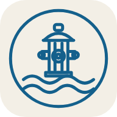

Florián 2.0
Požární hydranty · VHOS (všechny skupiny)
–
🟢 Online:
…
▾
☰
➕ Ostatní hydranty
Nepokryto
Poznámky
📷 Foto
🔢 Čísla
ℹ️ Info
🛰️ Satelit
🚰 Vodovod
📋 Změřit
🛠️ Úkoly
👥 Tým
🔔 Oznámení
🚦 Revize
Termíny
ČSN
🏭
Pracoviště
▾
Vše
🏢
Svazek
▾
🏘️
Obce
▾
📄 Protokol o revizi
📋 Seznam pro obec
📝 Aktualizace údajů
🖨️ Tisk mapy
🔼 Do GISu
📥 Import dat
👁️ Náhledy pro obce
📤 Sdílet appku
🎬 Promo video
☁️ Nahrát revize do cloudu
🔳 Přihlásit tablet (QR)
✕